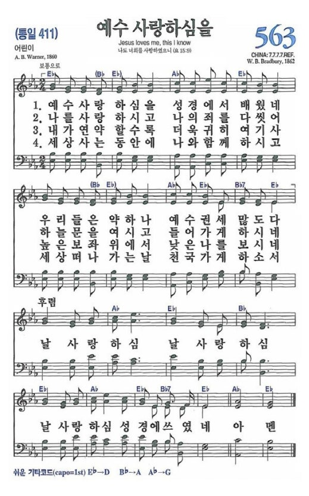
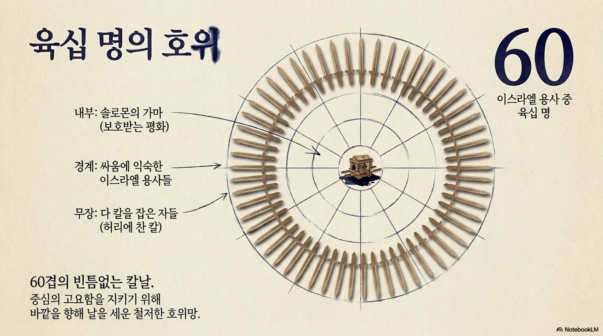

포기하고 싶은 밤, 무감각해진 침상에서 일어나 주님을 찾을 때,
비로소 당신을 둘러싼 완벽한 보호의 '가마'를 보게 됩니다.

예수 사랑하심은 성경에서 배웠네
우리들은 약하나 예수 권세 많도다
날 사랑하심 날 사랑하심
날 사랑하심 성경에 쓰였네
힘든 일을 만나면 우리는 흔히 피하고 싶어집니다. 그러나 부활하신 예수님은 실패와 아픔이 있는 예루살렘 성에 "머물라"고 하셨습니다.
자신의 실패와 죄책감을 주님께 가지고 나아가지 못하고 회피했습니다. 결국 절망 가운데 홀로 남겨졌습니다.
예수님을 세 번이나 부인했던 장소에서 도망치지 않고, 밖으로 나가 심히 통곡하며 자신의 연약함을 주님 앞에 직면했습니다. 이 통곡의 자리에서 그는 위대한 사도로 성장했습니다.
아가서의 신부는 기나긴 영적 어둠('밤') 속에서 주님을 잃어버렸습니다. 그녀는 '침상'에서 주님을 찾습니다. 침상은 나 자신(피곤함, 상처 등)에게만 집중하는 곳이기에 영적 감각을 무뎌지게 만듭니다. 신앙의 회복은 "이에 내가 일어나서"(아가 3:2) 움직일 때 시작됩니다.
"그들을 지나치자마자 마음에 사랑하는 자를 만나서... 놓지 아니하였노라"
- 아가 3:4
침상에서 일어나 거리로 나가고, 깨어있는 신앙의 멘토('순찰하는 자')들에게 묻고 찾을 때, 포기하기 바로 직전('지나치자마자') 우리는 마침내 응답하시고 찾아오시는 주님을 만나게 됩니다.

포기하지 않고 주님을 찾은 신부의 눈앞에 드디어 '솔로몬의 가마'가 보입니다(아가 3:7). 이 가마 주변에는 전쟁에 익숙한 육십 명의 용사들이 빈틈없이 둘러싸 호위하고 있습니다. 밤의 두려움 속에서도 신부를 안전하게 데려가겠다는 왕의 강력한 의지입니다.
우리가 주님을 만나면 내 인생의 밤(문제)이 즉시 사라지는 것은 아닐 수 있습니다. 하지만 어두운 밤 가운데서도 나를 완벽하게 보호하시는 주님의 평안 안에서 문제 속을 당당히 걸어갈 수 있게 됩니다.
나를 위해 예비된 은혜의 가마에 올라타, 서로의 삶을 진솔하게 나누어 봅시다.
성도님, 때로는 힘들고 불안한 마음을 피하기 위해 바쁘게 움직이거나 다른 즐거움 뒤로 숨어본 적이 있으신가요?
👉 우리는 아픔과 실패를 마주하기 두려워 회피를 선택하곤 하지만, 잠시 괜찮아지는 것 같을 뿐 회피는 마음을 무감각하게 만들며 문제를 해결해주지 않습니다. 예수님은 우리의 아픔과 연약함이 있는 그 자리에 머물며, 베드로처럼 눈물로 주님께 나아오라고 초대하십니다. 나의 실패나 실수가 나를 망치는 것이 아니라 주님께 나아가지 않고 도망치는 것이 나를 망친다는 사실을 기억하며, 내 연약함을 있는 그대로 주님께 가지고 나아가보는 것은 어떨까요? 그 순간 우리 안에 새로운 성장의 동력이 살아날 것입니다.
예수님을 사랑하지만, 어느덧 내 감정과 피곤함에만 집중하며 영적으로 무뎌진 '밤'의 시간을 보내고 계시지는 않나요?
👉 바쁜 일상 속에서 오랫동안 주님을 찾지 않아 영적인 감각이 둔해지는 것은 누구에게나 일어날 수 있는 일입니다. 편안한 '침상'에 머물며 내 육신의 소리에만 귀 기울이던 자리에서 영적으로 깨어나려면 다소 시간이 필요할 수 있습니다. 하지만 안심하시길 바랍니다. 다시 말씀을 읽고 기도하며 하루하루 주님을 찾다 보면, 어느새 굳어 있던 마음이 부드러워지고 닫혔던 영의 귀가 열리는 것을 경험하게 될 것입니다. 무관심을 끝내고 "내가 일어나서" 주님을 능동적으로 찾아 나서는 작은 행동을 오늘 당장 시작해 보시기를 원합니다.
간절히 기도하고 주님을 찾았음에도, 당장 응답이 없거나 상황이 변하지 않아 답답함을 느끼며 멈춰 서 계시나요?
👉 일상의 거리로 나아가 주님을 찾았음에도 여전히 만나지 못할 때, 우리는 종종 "왜 달라지는 게 없지?" 하며 멈추고 싶어집니다. 하지만 이스라엘 백성이 쓴 물이 나오는 마라에서 멈추었다면 엘림의 풍성한 오아시스를 보지 못했을 것입니다. 포기하고 멈추고 싶은 바로 그 순간이 가장 중요한 영적인 승부처입니다. 답답할 때는 먼저 걸어간 믿음의 동역자들에게 도움을 구하며 한 걸음만 더 나아가 보세요. 우리가 온 마음을 다해 찾을 때, 결코 우리를 고아처럼 버려두지 않으시고 마침내 찾아오시는 주님을 반드시 만나게 될 것입니다.
문제가 여전히 곁에 있을지라도 두려워하지 마십시오. 예수님을 만난 사람은 홀로 걷지 않습니다. 나의 연약함을 숨기지 않고 진실하게 주님께 나아갈 때, 우리는 안전하고 평안한 은혜의 가마 안에서 어두운 밤을 통과하게 될 것입니다.